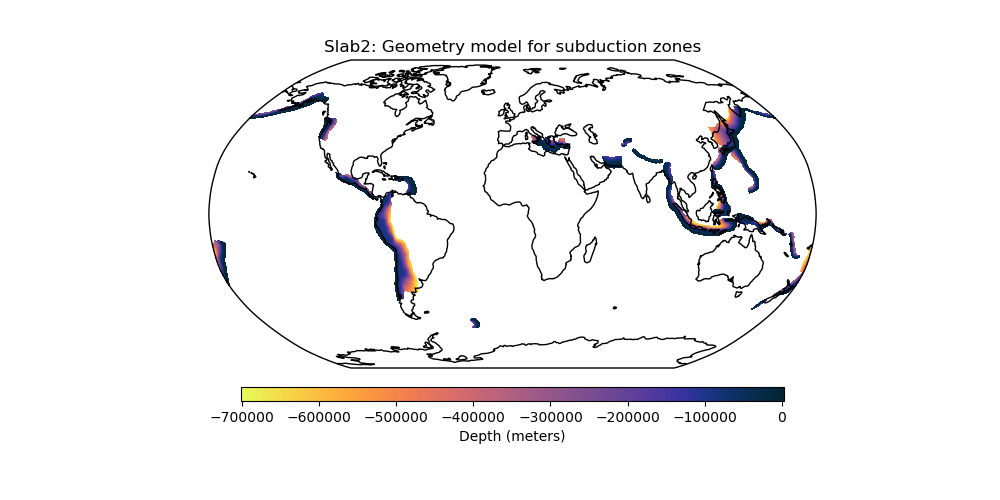

Note
Click here to download the full example code
Slab2 - A Comprehensive Subduction Zone Geometry Model¶
Slab2 is a three-dimensional compilation of global subduction geometries, separated into regional models for each major subduction zone. More information at the USGS website.
Out:
/home/santi/git/rockhound/examples/slab2.py:52: UserWarning: Matplotlib is currently using agg, which is a non-GUI backend, so cannot show the figure.
plt.show()
import rockhound as rh
import matplotlib.pyplot as plt
import cmocean
import cartopy.crs as ccrs
from rockhound.slab2 import ZONES
# Fetch all Slab2 subduction zones and add them inside a list
subduction_zones = []
for zone in ZONES:
subduction_zones.append(rh.fetch_slab2(zone))
# Get min and max values of the subducting plates' depths
vmax = max([grid.depth.actual_range[1] for grid in subduction_zones])
vmin = min([grid.depth.actual_range[0] for grid in subduction_zones])
# Plot the depth of each subducting plate inside Slab2 with the same colorscale
plt.figure(figsize=(10, 5))
ax = plt.axes(projection=ccrs.Robinson())
for grid in subduction_zones:
pc = grid.depth.plot.pcolormesh(
cmap=cmocean.cm.thermal_r,
ax=ax,
transform=ccrs.PlateCarree(),
add_colorbar=False,
vmin=vmin,
vmax=vmax,
)
ax.set_title("Slab2: Geometry model for subduction zones")
plt.colorbar(
pc,
ax=ax,
label="Depth (meters)",
pad=0.05,
aspect=40,
shrink=0.7,
orientation="horizontal",
)
ax.set_global()
ax.coastlines()
plt.show()
Total running time of the script: ( 0 minutes 27.209 seconds)